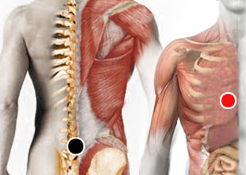

Ureaplasma urealyticum
Pares
lumbar 3 - condral (D)
gluteo menor - sacro

Generalidades:
Es una bacteria del género: Ureaplasma especie: urealyticum. En encuentra en un 70% de la población sexualmente activa sin causar patología en la mayoría de los casos. En un pequeño porcentaje causa enfermedades como uretritis, infertilidad, neumonía, meningitis, cansansio, debilidad. En la mujer puede causar: vaginitis, crioamnionitis (infección del líquido amniótico), aborto, nacimiento prematuro; en el hombre: epididimitis (infección de los conductos seminales), prostatitis. Dada su baja patogenicidad se sospecha que pueda estar acompañada de otras bacterías o patógenos. Carece de membrana celular por lo que la penicilina no le afecta.
Transmisión:
Es una bacteria muy contagiosa que se puede trasmitir por contacto sexual, por medio de la sangre (transfusión, uso de jeringas, etc.), por la saliva o incluso por el aire. Ya que en la mayoría no causa síntomas es fácil transmitirla inadvertidamente.